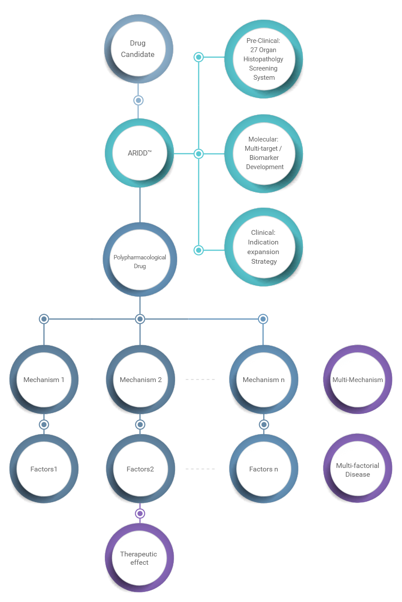

-
Pipeline
-
퇴행성 뇌질환과 감염성 질환처럼 복합적인 요인으로 발생되는 난치성 질병들은 단일 작용기전만으로는
근본적인 치료효과를 기대하기 어렵습니다. 아리바이오는 질환의 복합적인 발병 원인들을 동시에 공략할 수 있는 다중기작 약물
(Polypharmacological Drug) 개발을 위해 선도형 통합신약개발 플랫폼 (ARIDDtm: Advanced, Rapid and Integrated Drug Development) 을
이용하여 난치성 질환 치료제를 개발하고 있습니다.
